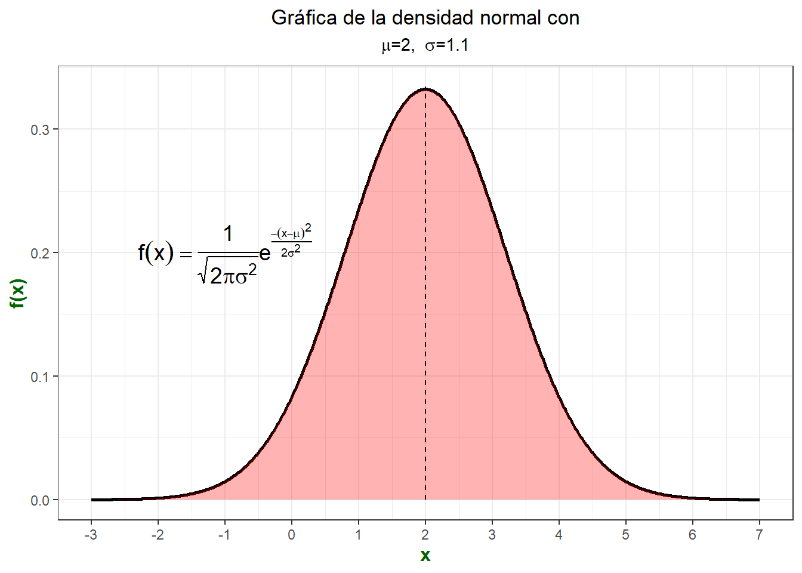
DISTRIBUCIONES CONTINUAS EN R
Distribución normal

Sobre estas notas. Material docente sobre la distribución normal y sus aplicaciones, con explicaciones matemáticas, ejemplos y código R.
1 Función de densidad normal
1.0.1 Definición de \(f\)
La función de densidad de la distribución normal con parámetros \(\mu\)y\(\sigma^2\) está dada por:
\[f(x)\;= \; \frac{1}{\sqrt{2 \pi \sigma^2}} \, e^{-\frac{(x-\mu)^2} {2 \sigma^2}}, \qquad \text{para todo } x\in\mathbb{R}\]
El código para escribir la expresión anterior es:
$$f(x)\;= \; \frac{1}{\sqrt{2 \pi \sigma^2}} \, e^{-\frac{(x-\mu)^2} {2 \sigma^2}}, \qquad \text{para todo } x\in\mathbb{R}$$2 Gráfica de \(f\)
2.0.1 Normal con \(\mu=2\)y\(\sigma=1.1\)
En el siguiente ejemplo, observamos la gráfica de la función de densidad normal para una variable aleatoria \(X\)que tiene distribución normal con parámetros\(\mu=2\)y\(\sigma=1.1\). Se observa la simetría de las dos áreas ubicadas tanto a la izquierda como a la derecha de\(\mu=2\) (línea punteada).
2.0.2 Normal con \(\mu=0\)y\(\sigma=1\)
En este otro ejemplo, observamos la gráfica de la función de densidad normal para una variable aleatoria \(X\)que tiene distribución normal con parámetros\(\mu=0\)y\(\sigma=1\). Se observa la simetría en algunas áreas.
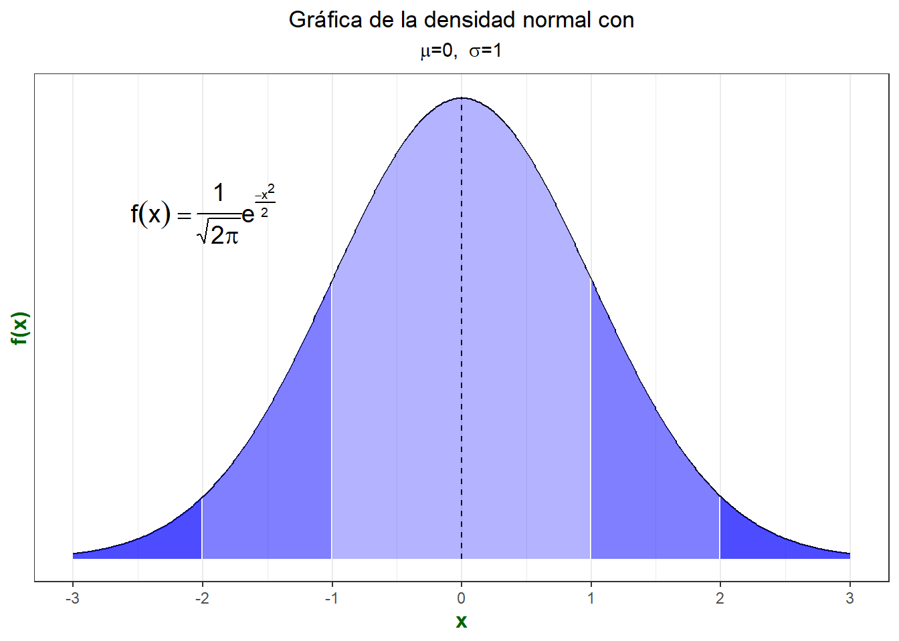
3 Gráfica de \(f\) con R
3.0.1 El código en R
En R la función que nos ayuda a utilizar la densidad de la distribución normal en R es.
dnorm(x, mean, sd)Aquí:
xes un vector de números.meanes un valor del parámetro \(\mu\). Por defecto, su valor es 0.sdes un valor de \(\sigma\). Por defecto, su valor es 1.
3.0.2 Ejemplo 1: gráfica de \(f\) con R
En el siguiente ejemplo, observamos la gráfica de la función de densidad normal para una variable aleatoria \(X\)que tiene distribución normal con parámetros\(\mu=2\)y\(\sigma=1.1\):
# Crear una sucesión de números entre -9 y 9, aumentando en 0.05.
x <- seq(-9, 9, by = 0.05)
# Suponiendo que los parámetros son: mu=2 y sigma=1.1.
y <- dnorm(x, mean = 2, sd = 1.1)
# Gráfica de la densidad normal
plot(x,y)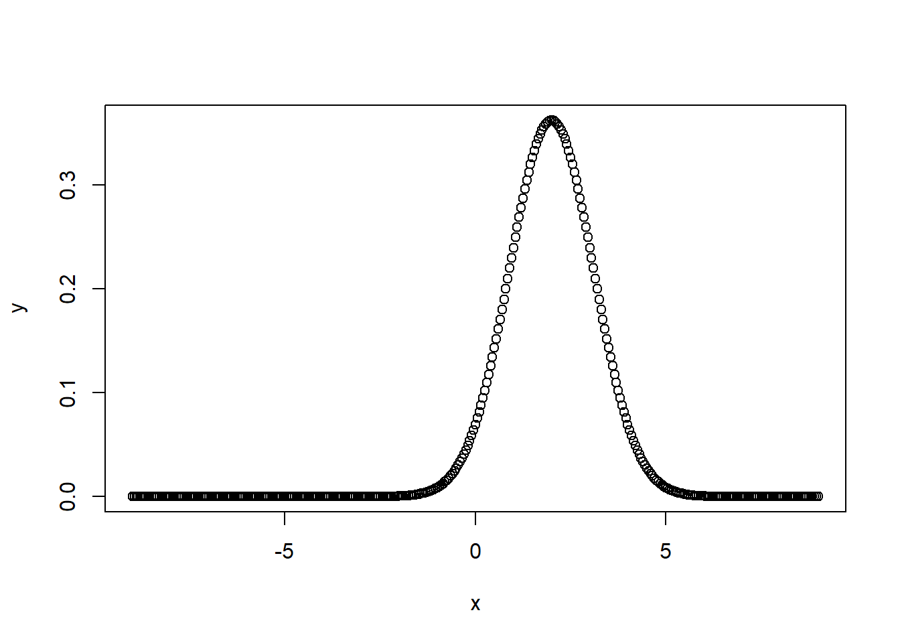
4 Función de distribución acumulada normal
4.0.1 Definición de \(F\)
La función de distribución acumulada normal se simboliza por \(F\)o\(\Phi\). Su definición es:
\[F(t) \; = \; \Phi(t) = P(X \leq t), \qquad \text{para todo } t\in\mathbb{R}\]
El código para escribir la expresión anterior es:
$$ F(t) \; = \;\Phi(t) = P(X \leq t), \qquad \text{para todo } t\in\mathbb{R}$$5 Gráfica de \(F\)
5.0.1 Normal con \(\mu=2\)y\(\sigma=1.1\)
En el siguiente ejemplo, observamos la gráfica de la función de distribución acumulada para una variable aleatoria \(X\)que tiene distribución normal con parámetros\(\mu=2\)y\(\sigma=1.1\):
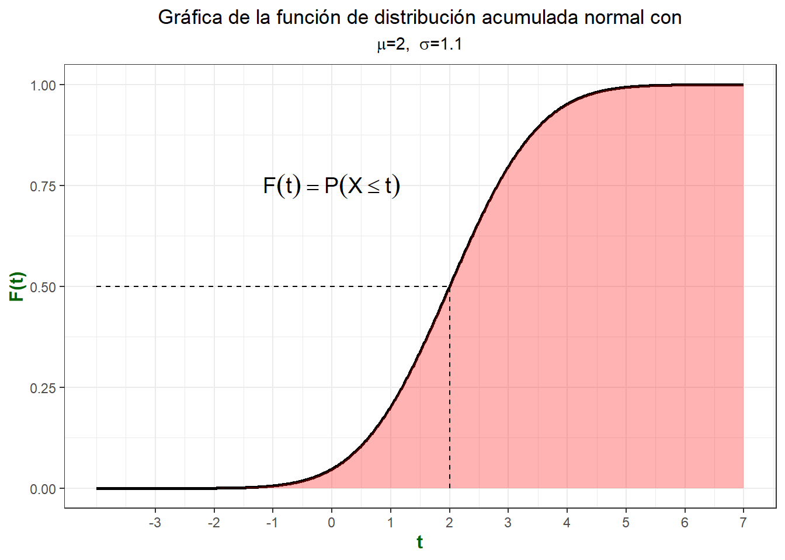
6 Gráfica de \(F\) con R
6.0.1 El código en R
En R la siguiente función nos ayuda a utilizar esta función:
pnorm(x, mean, sd)Aquí:
xes un vector de números.meanes un valor del parámetro \(\mu\). Por defecto, su valor es 0.sdes un valor de \(\sigma\). Por defecto, su valor es 1.
6.0.2 Ejemplo 2: gráfica de \(F\) con R
En el siguiente ejemplo, observamos la gráfica de la función de distribución acumulada para una variable aleatoria \(X\)que tiene distribución normal con parámetros\(\mu=2\)y\(\sigma=1.1\):
# Crear una sucesión de números entre -9 y 9, aumentando en 0.05.
x <- seq(-9, 9, by = 0.05)
# Suponiendo que los parámetros son: mu=2 y sigma=1.1.
y <- pnorm(x, mean = 2, sd = 1.1)
# Gráfica de la densidad normal
plot(x,y)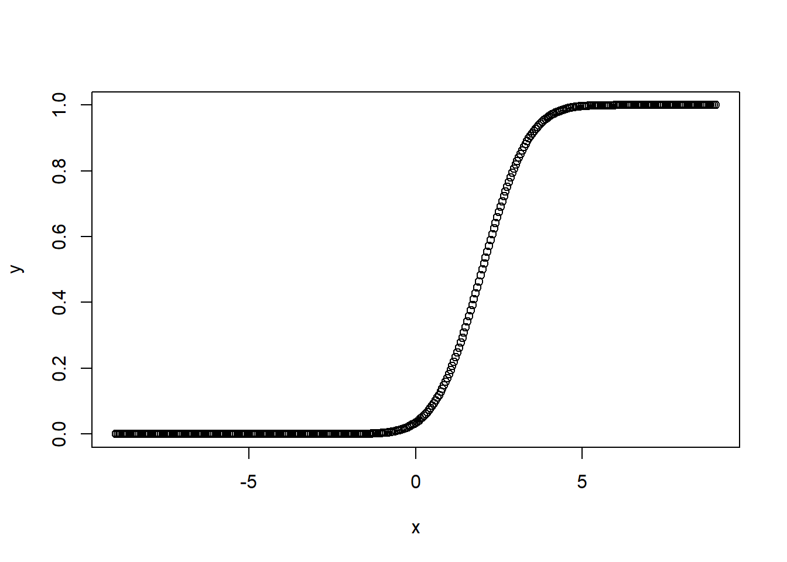
7 Ejemplo 3: Cálculo de probabilidades
Con pnorm podemos calular probabilidades. Por ejemplo, si \(X\)tiene distribución normal con parámetros\(\mu=2\)y\(\sigma=1.1\), entonces, calcular:
La probabilidad de que X sea menor o igual que 3.
La probabilidad de que X sea mayor o igual que 3.
7.0.1 Solución parte (a)
La probabilidad de que \(X\) sea menor o igual que 3 es:
\[P(X \leq 3) \; = \; 0.8183\]
El código para escribir la expresión anterior es:
$$P(X \leq 3) \; = \; 0.8183$$pnorm(3, mean = 2, sd = 1.1)## [1] 0.81834897.0.2 Solución parte (b)
La probabilidad de que \(X\) sea mayor o igual que 3 es: \[P(X \geq 3) \; = \; 0.1817\]
El código para escribir la expresión anterior es:
$$P(X \geq 3) \; = \; 0.1817$$pnorm(3, mean = 2, sd = 1.1, lower.tail=FALSE)## [1] 0.1816511Observe que, en R, se ha utilizado el argumento “lower.tail=FALSE” para calcular esta probabilidad. Además, observe también que se pudo haber calculado la propiedad del complemento para calcula esta probabilidad:
\[P(X \geq 3) \; = \; 1- P(X \leq 3) \; = \; 1- 0.8183 \; = \;0.1817\]
El código para escribir la expresión anterior es:
$$P(X \geq 3) \; = \; 1- P(X \leq 3) \; = \; 1- 0.8183 \; = \;0.1817$$8 Propiedades de la distribución normal
8.0.1 Propiedad 1
Si \(X\)es normal con parámetros\(\mu\)y\(\sigma^2\), entonces, \[E(X)=\mu, \qquad V(X)=\sigma^2\]
El código para escribir la expresión anterior es:
$$E(X)=\mu, \qquad V(X)=\sigma^2$$8.0.2 Propiedad 2
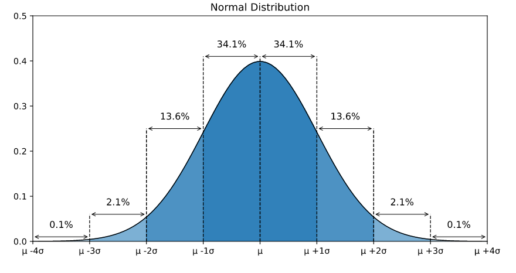
En la gráfica se indica que (afirmaciones que se pueden justificar con los métodos que se indiquen más adelante):
Aproximadamente el 68.2 % de los datos está dentro de 1 desviación estándar del promedio (de \(\mu-1\sigma\)a\(\mu+1\sigma\)).
Aproximadamente el 95.4% de los datos se encuentran dentro de 2 desviaciones estándar del promedio (de \(\mu-2\sigma\)a\(\mu+2\sigma\)).
Aproximadamente el 99.6 % de los datos se encuentran dentro de las 3 desviaciones estándar del promedio (de \(\mu-3\sigma\)a\(\mu+3\sigma\)).
8.0.3 Propiedad 3
En la figura anterior podemos observar que:
La densidad normal es creciente para \(x<\mu\)y decreciente para\(x>\mu\). Es decir, el punto más alto de la densidad normal se obtiene cuando\(x=\mu\).
Las colas, es decir, los extremos o los lados de la densidad normal se prolongan al infinito en ambas direcciones y nunca tocan el eje horizontal.
8.0.4 Propiedad 4
La densidad normal es simétrica con respecto a \(\mu\).
La densidad normal es unimodal.
La media, la mediana y la moda son todas iguales.
8.0.5 Propiedad 5
Hay toda una familia de distribuciones normales. Cada distribución normal específica se distingue por \(\mu\)y\(\sigma\) (compárese con las figuras de abajo).
library(ggplot2)
#https://community.rstudio.com/t/how-to-plot-overlapped-normal-distribution-curves-in-r-preferably-in-ggplot/35172
mean_sim <- 5
std_sim <-2
grosor = 1 # Grosor de las líneas de la gráfica
lcb <- ((mean_sim - (3 * std_sim)) - 5)
ucb <- (((2 * mean_sim) + (3 * (2 * std_sim))) + 5)
u <- seq(from = lcb,
to = ucb,
length.out = 1e+5)
v1 <- dnorm(x = u,
mean = mean_sim,
sd = std_sim)
v2 <- dnorm(x = u,
mean = (2 * mean_sim),
sd = (2 * std_sim))
ggplot(data = data.frame(u = c(lcb, ucb)),
mapping = aes(x = u)) +
xlim(c(-20, 40))+
stat_function(mapping = aes(colour = "Distbn. 1"),
fun = dnorm,
args = list(mean = 0*mean_sim,
sd = 0.5*std_sim), size=grosor) +
stat_function(mapping = aes(colour = "Distbn. 2"),
fun = dnorm,
args = list(mean = ( 4*mean_sim),
sd = ( 1* std_sim)), size=grosor) +
stat_function(mapping = aes(colour = "Distbn. 3"),
fun = dnorm,
args = list(mean = 0*mean_sim,
sd = 2*std_sim), size=grosor) +
stat_function(mapping = aes(colour = "Distbn. 4"),
fun = dnorm,
args = list(mean = 4*mean_sim,
sd = 5*std_sim), size=grosor)+
scale_colour_manual(values = c("red", "blue", "green", "black")) +
labs(x = "Valores x",
y = "Densidades f(x)",
fill="",
title = "(a) Densidad normal para diferentes valores de los parámetros")+
scale_color_discrete(name = expression(paste("Normal", " ", "con", ":")),
labels = c(expression(paste(mu==0, ", ", " ", sigma==1)),
expression(paste(mu==20, ", ", " ", sigma==2)),
expression(paste(mu==0, ", ", " ", sigma==4)),
expression(paste(mu==20, ", ", " ", sigma==10))
)) # Edit legend title and labels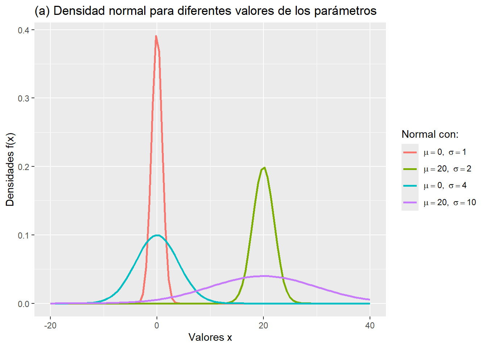
library(ggplot2)
#https://community.rstudio.com/t/how-to-plot-overlapped-normal-distribution-curves-in-r-preferably-in-ggplot/35172
mean_sim <- 5
std_sim <-2
grosor = 1 # Grosor de las líneas de la gráfica
lcb <- ((mean_sim - (3 * std_sim)) - 5)
ucb <- (((2 * mean_sim) + (3 * (2 * std_sim))) + 5)
u <- seq(from = lcb,
to = ucb,
length.out = 1e+5)
v1 <- dnorm(x = u,
mean = mean_sim,
sd = std_sim)
v2 <- dnorm(x = u,
mean = (2 * mean_sim),
sd = (2 * std_sim))
ggplot(data = data.frame(u = c(lcb, ucb)),
mapping = aes(x = u)) +
xlim(c(-20, 40))+
stat_function(mapping = aes(colour = "Distbn. 1"),
fun = pnorm,
args = list(mean = 0*mean_sim,
sd = 0.5*std_sim), size=grosor ) +
stat_function(mapping = aes(colour = "Distbn. 2"),
fun = pnorm,
args = list(mean = ( 4*mean_sim),
sd = ( 1* std_sim)), size=grosor) +
stat_function(mapping = aes(colour = "Distbn. 3"),
fun = pnorm,
args = list(mean = 0*mean_sim,
sd = 2*std_sim), size=grosor) +
stat_function(mapping = aes(colour = "Distbn. 4"),
fun = pnorm,
args = list(mean = 4*mean_sim,
sd = 5*std_sim), size=grosor)+
scale_colour_manual(values = c("red", "blue", "green", "black")) +
labs(x = "Valores t",
y = "Acumuladas F(t)",
fill="",
title = "(b) Acumulada normal para diferentes valores de los parámetros")+
scale_color_discrete(name = expression(paste("Normal", " ", "con", ":")),
labels = c(expression(paste(mu==0, ", ", " ", sigma==1)),
expression(paste(mu==20, ", ", " ", sigma==2)),
expression(paste(mu==0, ", ", " ", sigma==4)),
expression(paste(mu==20, ", ", " ", sigma==10))
)) # Edit legend title and labels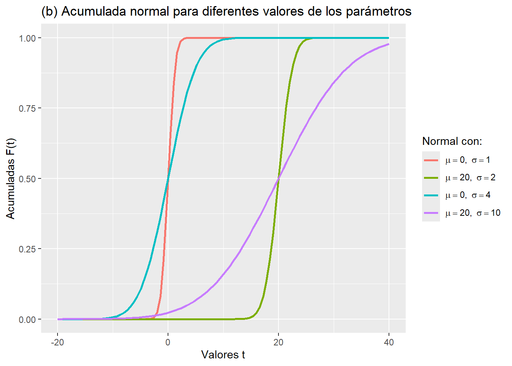
En las figuras (a) y (b) podemos observar que:
La media \(\mu\) influye en la posición de la curva. Véase la figura (a).
La desviación estándar \(\sigma\) determina el ancho de la curva. Véase la figura (a).
En la figura (b) se ilustra el comportamiento de 4 gráficas de la distribución acumulada normal para diferentes valores de \(\mu\)y de\(\sigma\).
9 La distribución normal estándar
9.0.1 Definición
Aquella distribución normal con esperanza 0 y varianza 1. La variable aleatoria asociada se simbolizará con \(Z\).
9.0.2 Propiedades
De la figura de abajo:
La densidad \(f\) es simétrica con respecto a 0.
El área de la región I es igual al área de la región II.
Area I + Area II + Area III = 1
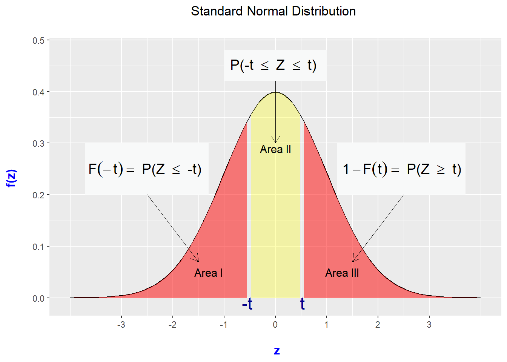
10 La tabla normal estándar
Las áreas de la distribución normal estándar correspondiente a varias probabilidades se encuentran actualmente tabuladas. La tabla A.3 del apéndice de mis Notas de clase (ver Cap. 4 (Continua)) es un ejemplo. . Ella tabula la función de distribución acumulada \(F(t) = P(Z\leq t)\), para diferentes valores de t. La tabla es la siguiente (en el link anterior se puede descargar):
10.0.1 Áreas para valores negativos de Z
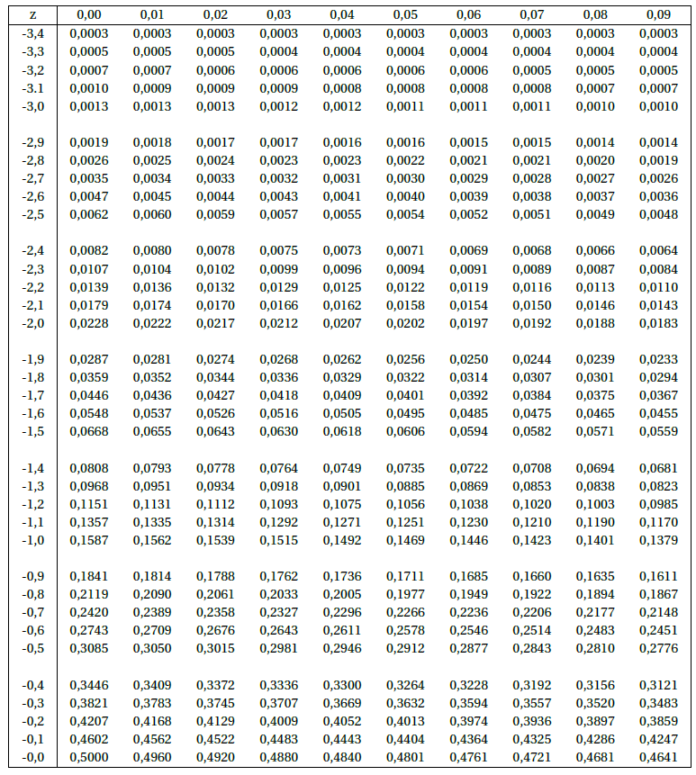
10.0.2 Áreas para valores positivos de Z
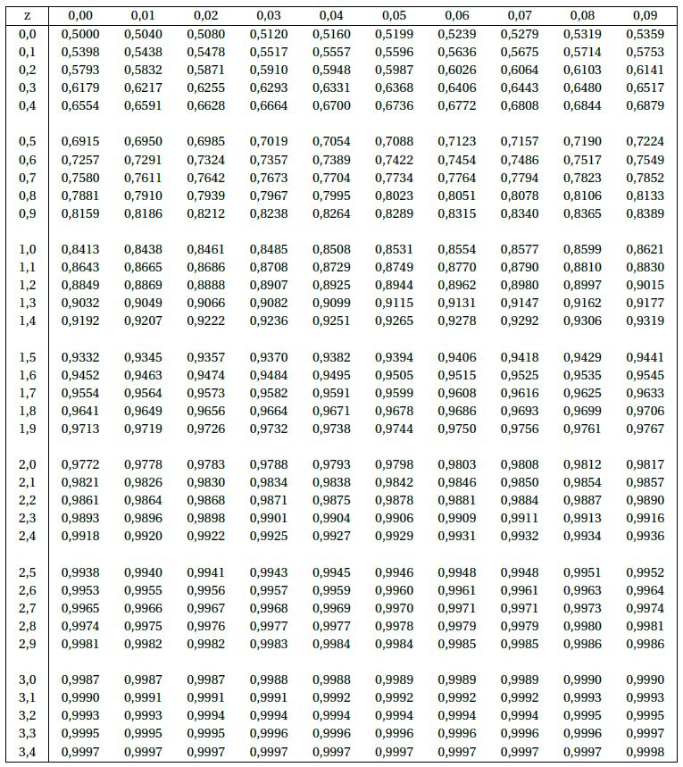
11 Ejemplo 4: Uso de la tabla normal estándar
11.0.1 Inciso (a)
Supongamos que queremos encontrar
\[F(2.91) \; = \; P(Z \leq 2.91)\]
Para ello, primero localizamos 2.9 en la columna izquierda de la tabla, y despué localizamos a 0.01 en el renglón superior. Buscando en el interior de la tabla, vemos que el rengl´on de 2.9 y la columna de 0.01 se intersecan en el valor 0.9982. Por consiguiente, hemos determinado la probabilidad que buscábamos:
\[F(2.91) \; = \; P(Z \leq 2.91)\; = \;0.9982\]
A continuación, en la tabla de abajo se presenta una parte de esa tabla, donde se muestra la probabilidad pedida.
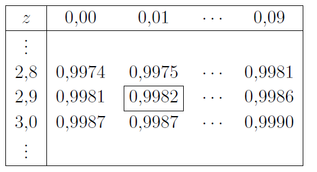
11.0.2 Inciso (b)
Siguiendo el mismo método podemos determinar
\[F(-1.33) \; = \; P(Z \leq -1.33)\]
Primero encontramos el renglón de −1.3 y después avanzamos por él hasta la columna de 0.03. Allí vemos que
\[F(-1.33) \; = \; P(Z \leq -1.33) \; = \; 0.0918\]
11.0.3 Inciso (c)
Observe que hay valores de \(Z\) que no aparecen en la tabla (como por ejemplo, 3.5 y −4.2). En este caso, debemos aproximar a 0 las probabilidades correspondientes a los valores negativos, y a 1, las probabilidades correspondientes a los valores positivos. Por ejemplo,
\[F(3.5) \; = \; P(Z \leq 3.5) \; ≈\; 1 \qquad\mbox{y} \qquad F(−4.2)\; = \; P(Z\leq -4.2) \; ≈\; 0\]
12 Ejemplo 5: Probabilidades directamente con \(Z\)
Si \(Z\) tiene distribución normal estándar, entonces, calcular:
La probabilidad de que Z sea menor o igual que 1.23.
La probabilidad de que Z sea mayor o igual que 1.23.
La probabilidad de que Z sea menor o igual que -1.52.
La probabilidad de que Z sea mayor o igual que -1.52.
La probabilidad de que Z esté entre -1.52 y 1.23.
12.0.1 Solución parte (a)
La probabilidad de que \(Z\) sea menor o igual que 3 es:
\[P(Z \leq 1.23) \; = \; 0.8907\]
El código para escribir la expresión anterior es:
$$P(Z \leq 1.23) \; = \; 0.8907$$Graficamente:
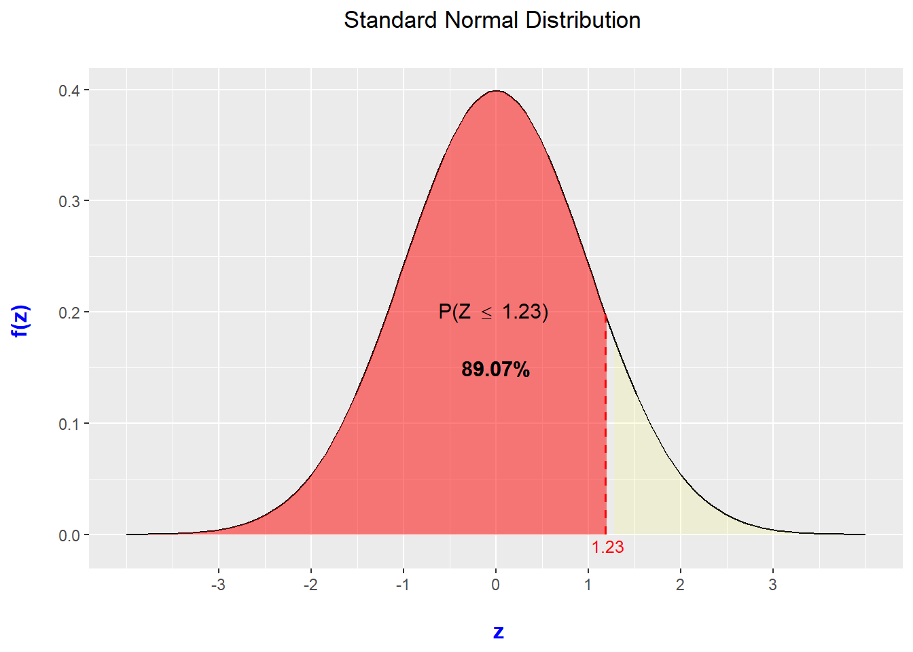
12.0.2 Solución parte (b)
La probabilidad de que \(X\) sea mayor o igual que 3 es: \[P(Z \geq 1.23) \; = \; 1 - P(Z \leq 1.23) \; = 1 - 0.8907 \; = \;0.1093\]
El código para escribir la expresión anterior es:
$$P(Z \geq 1.23) \; = \; 1 - P(Z \leq 1.23) \; = 1 - 0.8907 \; = \;0.1093$$Gráficamente:
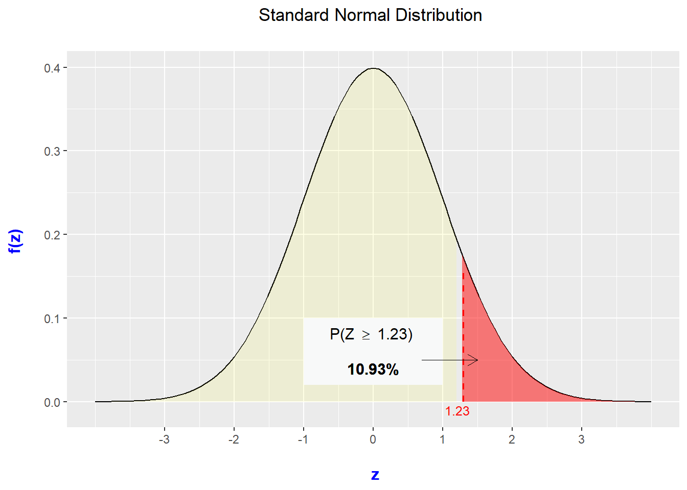
12.0.3 Solución parte (c)
La probabilidad de que Z sea menor o igual que -1.52 es \[P(Z \leq -1.52) \; = \; 0.0643\]
El código para escribir la expresión anterior es:
$$P(Z \leq -1.52) \; = \; 0.0643$$Gráficamente:
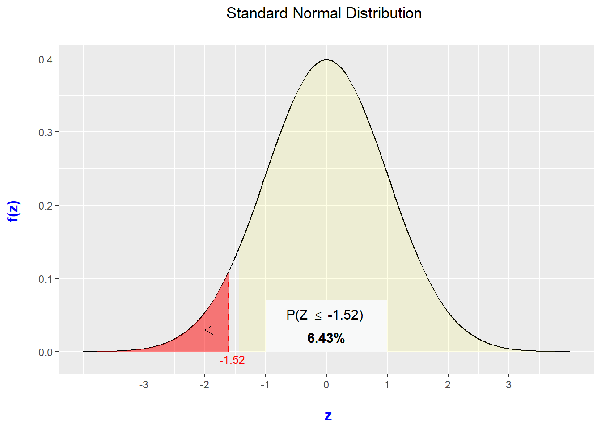
12.0.4 Solución parte (d)
La probabilidad de que Zsea mayor o igual que -2.52 es:
\[P(Z \geq -2.52) \; = \; 1 - P(Z \leq -2.52) \; = 1 - 0.0059 \; = \;0.9941\]
El código para escribir la expresión anterior es:
$$P(Z \geq -2.52) \; = \; 1 - P(Z \leq -2.52) \; = 1 - 0.0059 \; = \;0.9941$$Gráficamente:
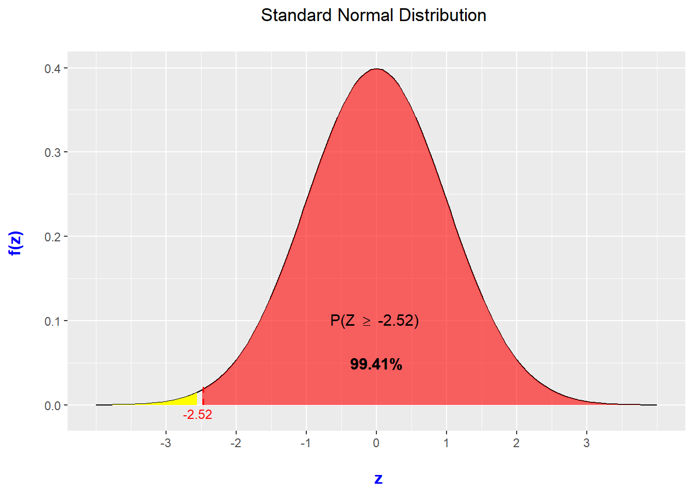
### Solución parte (e)
La probabilidad de que Z esté entre -2.52 y 1.23 es
\[P(-2.52\leq Z \leq 1.23) \; = \; P(Z \leq 1.23) - P(Z \leq -2.52) \; = \;0.8907 - 0.0059 \; =\; 0.8848\]
El código para escribir la expresión anterior es:
$$P(-2.52\leq Z \leq 1.23) \; = \; P(Z \leq 1.23) - P(Z \leq -2.52) \; = \;0.8907 - 0.0059 \; =\; 0.8848$$Gráficamente:
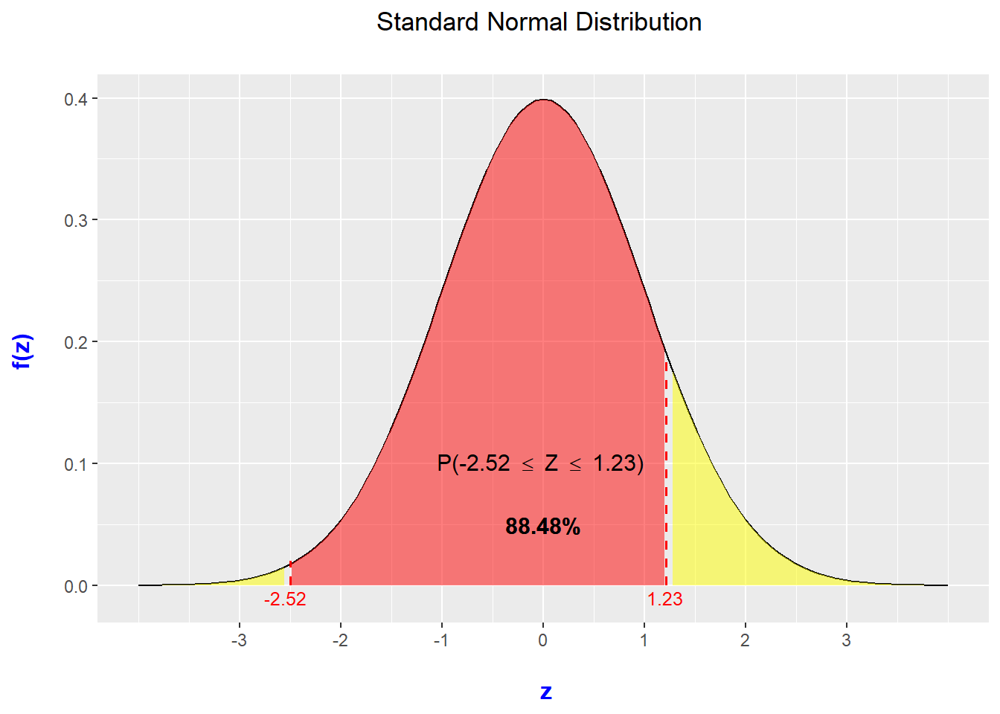
13 Fórmula de estandarización a \(Z\)
13.0.1 Fórmula \(Z\)
Sea \(X\)una variable aleatoria que tiene distribución normal con parámetros\(\mu\)y\(\sigma^2\). Entonces, la siguiente variable tiene distribución normal estándar:
\[Z=\frac{X-\mu}{\sigma}\]
El código para escribir la expresión anterior es:
$$Z=\frac{X-\mu}{\sigma}$$13.0.2 Estandarización a \(Z\)
Sea \(X\)una variable aleatoria que tiene distribución normal con parámetros\(\mu\)y\(\sigma^2\). Entonces, para todo número real\(t\), se cumple que:
\[P(X \leq t) \quad =\quad P(X\; -\; \mu \leq t\; -\; \mu) \quad = \quad P\Big(\frac{X-\mu}{\sigma} \leq \frac{t-\mu}{\sigma}\Big) \quad =\quad P\Big(Z \leq \frac{t-\mu}{\sigma}\Big)\]
El código para escribir la expresión anterior es:
$$P(X \leq t) \quad =\quad P(X\; -\; \mu \leq t\; -\; \mu) \quad = \quad
P\Big(\frac{X-\mu}{\sigma} \leq \frac{t-\mu}{\sigma}\Big) \quad =\quad P\Big(Z \leq \frac{t-\mu}{\sigma}\Big)$$Es decir,
\[P(X \leq t) \; =\; P\Big(Z \leq \frac{t-\mu}{\sigma}\Big)\]
El código para escribir la expresión anterior es:
$$P(X \leq t) \; =\; P\Big(Z \leq \frac{t-\mu}{\sigma}\Big)$$14 Ejemplo 6: probabilidades con \(X\) no estándar
Si \(X\)es una variable normal con media\(\mu=50\)y varianza\(\sigma^2=100\), calcule las siguientes probabilidades utilizando la distribución normal estándar.
La probabilidad de que \(X\) sea menor o igual que 40.
La probabilidad de que \(|X|\)(o sea, el valor absoluto de\(X\)) sea menor o igual que 60.
La probabilidad de que \(|X|\)(o sea, el valor absoluto de\(X\)) sea mayor o igual que 60.
14.0.1 Solución parte (a)
La probabilidad de que \(X\) sea menor o igual que 40 es: \[P(X\leq 40) \; =\; P\Big(Z \leq \frac{40-50}{10}\Big)\; =\; P(Z\leq -1) \; =\; 0.1587\]
El código para escribir la expresión anterior es:
$$P(X\leq 40) \; =\; P\Big(Z \leq \frac{40-50}{10}\Big)\; =\; P(Z\leq -1) \; =\; 0.1587$$En R: Se utiliza solo la función pnorm(z) para la distribución normal estándar.
z <- -1
a <- pnorm(z)
a## [1] 0.158655314.0.2 Solución parte (b)
La probabilidad de que que \(|X|\) sea menor o igual que 60 es:
\[\begin{eqnarray*} P(|X| \leq 60) &=& P(-60 \leq X \leq 60)\; =\; P(X\leq 60) \; - \; P(X\leq -60) \\ &=& P\Big(Z \leq \frac{60-50}{10}\Big) \; - \; P\Big(Z \leq \frac{-60-50}{10}\Big)\\ &=& P(Z \leq 1) - P(Z\leq -11) = 0.8413 - 0 \; =\; 0.8413 \end{eqnarray*}\]
El código para escribir la expresión anterior es:
\begin{eqnarray*}
P(|X| \leq 60) &=& P(-60 \leq X \leq 60)\; =\; P(X\leq 60) \; - \; P(X\leq -60) \\
&=& P\Big(Z \leq \frac{60-50}{10}\Big) \; - \; P\Big(Z \leq \frac{-60-50}{10}\Big)\\
&=& P(Z \leq 1) - P(Z\leq -11) = 0.8413 - 0 \; =\; 0.8413
\end{eqnarray*}En R:
z1 <- 1
z2 <- -11
b <- pnorm(z1) - pnorm(z2)
b## [1] 0.841344714.0.3 Solución parte (c)
La probabilidad de que que \(|X|\) sea mayor o igual que 60 se puede hallar de dos maneras:
Primera forma:
Aplicando la propiedad del valor absoluto:
\[\begin{eqnarray*} P(|X| \geq 60) &=& P(X \geq 60) + P(X \leq - 60) \\ &=& P\Big(Z \geq \frac{60-50}{10}\Big) \;+ \; P\Big(Z \leq \frac{-60-50}{10}\Big)\\ &=& P(Z \geq 1) - P(Z\leq -11) = (1-0.8413) - 0 \; =\; 0.1587 \end{eqnarray*}\]
El código para escribir la expresión anterior es:
\begin{eqnarray*}
P(|X| \geq 60) &=& P(X \geq 60) + P(X \leq - 60) \\
&=& P\Big(Z \geq \frac{60-50}{10}\Big) \;+ \; P\Big(Z \leq \frac{-60-50}{10}\Big)\\
&=& P(Z \geq 1) - P(Z\leq -11) = (1-0.8413) - 0 \; =\; 0.1587
\end{eqnarray*}Segunda forma:
Aplicando la propiedad del valor absoluto, la ley del complemento y la parte (b):
\[P(|X| \geq 60) \; =\; 1- P(|X| \leq 60) \; =\; 1-0.8413 \; =\; 0.1587\]
El código para escribir la expresión anterior es:
$$P(|X| \geq 60) \; =\; 1- P(|X| \leq 60) \; =\; 1-0.8413 \; =\; 0.1587$$En R:
z1 <- 1
z2 <- -11
c <- pnorm(z1) - pnorm(z2)
1-c## [1] 0.158655315 Cuantil de una normal
15.0.1 Definición
Supongamos que \(X\)tiene distribución normal con media\(\mu\)y desviación estándar\(\sigma\). Para\(0 < \alpha < 1\), el símbolo\(x_\alpha\) es un valor cuantil de la distribución normal si cumple con la condición: \[P(X \geq x_\alpha) \;= \; \alpha\]
El código para escribir la expresión anterior es:
$$P(X \geq x_\alpha) \;= \; \alpha$$15.0.2 En R: Cuantil para cualquier normal
En R, un valor cuantil de la distribución normal puede ser calculada con cualquiera de las dos siguientes maneras equivalentes:
qnorm(1-alpha, mean, sd) # Primera forma
qnorm(alpha, mean, sd, lower.tail = FALSE) # Segunda formaAquí:
alphaes un vector de probabilidades.meanes un valor de la media muestral. Por defecto, su valor es 0.sdes la desviación estándar. Por defecto, su valor es 1.
15.0.3 En R: Cuantil para la normal estándar
En la distribución normal estándar, el cuantil puede ser calculada con cualquiera de las dos siguientes maneras equivalentes:
qnorm(1-alpha) # Primera forma
qnorm(alpha, lower.tail = FALSE) # Segunda forma16 Ejemplo 7: Calcular un cuantil
A manera de ejemplo, supongamos que \(X\)tiene distribución normal con media\(\mu=2\)y desviación estándar\(\sigma=1.1\). Sea\(Z\)la variable aleatoria que tiene distribución normal estándar. Hallar el valor de\(k\) tal que:
\(P(X \geq k)= 0.83\).
\(P(X \leq k)= 0.95\).
\(P(k < X < 3.1)= 0.75\).
\(P(-k < Z < k)= 0.95\).
El código para escribir la expresión anterior es:
a) $P(X \geq k)= 0.83$.
b) $P(X \leq k)= 0.95$.
c) $P(k < X < 3.1)= 0.75$.
d) $P(-k < Z < k)= 0.95$.16.0.1 Solución parte (a)
El valor de \(k\)tal que\(P(X \geq k)= 0.83\)es\(k=0.9504\).
alfa <- 0.83
mean <- 2
sd <- 1.1
qnorm(1-alfa, mean, sd)## [1] 0.9504182qnorm(alfa, mean, sd, lower.tail = FALSE)## [1] 0.950418216.0.2 Solución parte (b)
El valor de \(k\)tal que\(P(X \leq k)= 0.95\)es\(k=3.8093\).
alfa <- 0.95
mean <- 2
sd <- 1.1
qnorm(1-alfa, mean, sd, lower.tail = FALSE)## [1] 3.809339qnorm(alfa, mean, sd)## [1] 3.80933916.0.3 Solución parte (c)
El valor de \(k\)tal que\(P(k < X < 3.1)= 0.75\) no se puede calcular directamente, pero podemos proceder así (estandarizando y utilizando propiedades):
Sea \(t: = \frac{k-2}{1.1}\). Entonces,
\[ 0.75 \; = \; P(k < X < 3.1) \;= \; P\Big(\frac{k-2}{1.1} \; < \; Z \; < \; \frac{3.1-2}{1.1}\Big) \;= \; P(t < Z < 1) \;=\; P(Z < 1) \; - \; P(Z < t) \]
El código para escribir la expresión anterior es:
$$ 0.75 \; = \; P(k < X < 3.1) \;= \; P\Big(\frac{k-2}{1.1} \; < \; Z \; < \; \frac{3.1-2}{1.1}\Big) \;= \; P(t < Z < 1) \;=\; P(Z < 1) \; - \; P(Z < t) $$Vemos que \[P(Z < 1) =0.8413\]
El código para escribir la expresión anterior es:
$$P(Z < 1) =0.8413$$z <- 1
pnorm(z)## [1] 0.8413447Por lo tanto,
\[P(Z<t) \; = \; 0.8413 \; -\; 0.75 \;= \; 0.0913\]
El código para escribir la expresión anterior es:
$$P(Z<t) \; = \; 0.8413 \; -\; 0.75 \;= \; 0.0913$$ 0.8413-0.75## [1] 0.0913Al utilizar R, el valor cuantil es \(t=-1.3328\).
alfa <- 0.0913
qnorm(1-alfa, lower.tail = FALSE)## [1] -1.332792Como \(t = \frac{k+2}{1.1}\), entonces\(-1.3328 = \frac{k-2}{1.1}\), de donde\(k=2 - (1.3328)(1.1)= 0.5339\).
2 - (1.3328)*(1.1)## [1] 0.5339216.0.4 Solución parte (d)
El valor de \(k\)tal que\(P(-k < Z < k)= 0.95\) no se puede calcular directamente, pero podemos proceder así (utilizando propiedades):
\[ 0.95 \; = \; P(-k < Z < k) \;= \; 1 \; - \; 2 \, P(Z \; > \; k)\]
El código para escribir la expresión anterior es:
$$ 0.95 \; = \; P(-k < Z < k) \;= \; 1 \; - \; 2 \, P(Z \; > \; k)$$Es decir (despejando), \[P(Z >k) \; = \; \frac{1-0.95}{2} \; = \; 0.025\]
El código para escribir la expresión anterior es:
$$P(Z >k) \; = \; \frac{1-0.95}{2} \; = \; 0.025$$Al utilizar R, el valor cuantil es \(k=1.96\).
alfa <- 0.025
qnorm(1-alfa)## [1] 1.95996417 Ejemplo 8: enunciado (bombillos)
Una compañía fabrica bombillos con vida media de 500 horas y desviación estándar de 100. Suponga que los tiempos de vida útil de los bombillos se distribuyen normalmente, esto es que los tiempos de vida forman una distribución normal.
Encuentre la probabilidad de que cierta cantidad de focos dure menos de 650 horas.
Calcule la probabilidad de que cierta cantidad de focos dure más de 780 horas.
Determine la probabilidad de que cierta cantidad de focos dure entre 650 y 780 horas (ambos inclusive).
Halle el valor de k tal que el 5% de los bombillos tenga un tiempo de vida mayor que k horas?
Si se eligen 10000 bombillos, ¿cuántos tuvieron un tiempo de vida entre 650 y 780 horas (ambos inclusive)?
Si se eligen 1200 bombillos, ¿cuál es la probabilidad de que al menos 3 duren más de 780 horas?
Si se eligen 20 bombillos, ¿cuál es la probabilidad de que entre 16 y 19 (ambos inclusive) duren menos de 650 horas?
Si se eligen 20 bombillos, ¿cuál es la probabilidad de que entre 16 y 19 (ambos inclusive) no duren menos de 650 horas?
¿Qué proporción de los tiempos de vida de los bombillos está dentro de dos desviaciones estándar de la media?
Halle la puntuación (o puntaje) Z que representa el segundo cuartil (o la mediana) de la distribución normal de los tiempos de vida de los bombillos.
18 Ejemplo 8: Solución
Sea \(X\)la variable aleatoria que representa el tiempo de vida útil de los focos. Entonces,\(X\)tiene distribución normal con\(\mu=500\)y\(\sigma=100\).
18.0.1 Solución parte (a)
Nos piden \(P(X< 650)\).
Sin estandarizar
\[P(X< 650) \; = \; 0.9332\]
El código para escribir la expresión anterior es:
$$P(X< 650) \; = \; 0.9332$$En R:
probabilidad_a <- pnorm(650, mean=500, sd=100);
probabilidad_a## [1] 0.9331928Estandarizando (con \(Z\))
\[P(X< 650) \;=\; P\Big(Z< \frac{650-500}{100}\Big) \; = \; P(Z<1.5) \; = \; 0.9332\]
El código para escribir la expresión anterior es:
$$P(X< 650) \;=\; P\Big(Z< \frac{650-500}{100}\Big) \; = \; P(Z<1.5) \; = \; 0.9332$$En R:
probabilidad_a <- pnorm(1.5)
probabilidad_a## [1] 0.9331928Es decir, la probabilidad de que cierta cantidad de focos dure menos de 650 horas es aproximadamente de 0.9332.
18.0.2 Solución parte (b)
Nos piden \(P(X>780)\).
Sin estandarizar
\[P(X>780) \;=\; 0.0026\]
El código para escribir la expresión anterior es:
$$P(X>780) \;=\; 0.0026$$probabilidad_b <- pnorm(780, mean=500, sd=100,lower.tail=FALSE)
probabilidad_b## [1] 0.00255513Estandarizando (con \(Z\))
\[P(X>780) \;=\; P\Big(Z> \frac{780-500}{100}\Big) \; = \; P(Z>2.8) \; = \; 0.0026\]
El código para escribir la expresión anterior es:
$$P(X>780) \;=\; P\Big(Z> \frac{780-500}{100}\Big) \; = \; P(Z>2.8) \; = \; 0.0026$$probabilidad_b <- pnorm(2.8, lower.tail=FALSE)
probabilidad_b## [1] 0.00255513Por lo tanto, la probabilidad de que cierta cantidad de focos dure más de 780 horas es aproximadamente de 0.0026.
18.0.3 Solución parte (c)
Nos piden \(P(650 \leq X \leq 780)\).
Sin estandarizar
\[P(650 \leq X \leq 780) \; = \; P(X\leq 780) \;- \; P(X\leq 650) \; = \; 0.9975\; -\; 0.9332 \; = \; 0.0643\]
El código para escribir la expresión anterior es:
$$P(650 \leq X \leq 780) \; = \; P(X\leq 780) \;- \; P(X\leq 650) \; = \; 0.9975\; -\; 0.9332 \; = \; 0.0643$$En R:
probabilidad_c <- pnorm(780, mean=500, sd=100) - pnorm(650, mean=500, sd=100)
probabilidad_c## [1] 0.06425207probabilidad_c <- pnorm(780, mean=500, sd=100)
probabilidad_c## [1] 0.9974449Estandarizando (con \(Z\))
\[\begin{eqnarray*} P(650 \leq X \leq 780) &=& P(X\leq 780) \;- \; P(X\leq 680)\\ &= & P(Z\leq 2.8) \, - \, P(Z\leq 1.5) \;= \; 0.9975 \, - \, 0.9332 \;= \; 0.0643 \end{eqnarray*}\]
El código para escribir la expresión anterior es:
\begin{eqnarray*}
P(650 \leq X \leq 780) &=& P(X\leq 780) \;- \; P(X\leq 680)\\
&= & P(Z\leq 2.8) \, - \, P(Z\leq 1.5) \;= \; 0.9975 \, - \, 0.9332 \;= \; 0.0643
\end{eqnarray*}En R:
probabilidad_c <- pnorm(2.8) - pnorm(1.5);
probabilidad_c## [1] 0.06425207Por consiguiente, la probabilidad de que cierta cantidad de bombillos duren entre 650 y 780 horas es aproximadamente 0.0642.
18.0.4 Solución parte (d)
Debemos hallar el valor de \(k\)tal que el 5% de los bombillos tenga un tiempo de vida mayor que k horas. Es decir, hallar\(k\) tal que \[P(X >k) \;= \; 0.05\]
El código para escribir la expresión anterior es:
$$P(X >k) \;= \; 0.05$$En este caso, \(k=664.45\), valor calculado con R:
qnorm(1-0.05, mean=500, sd=100)## [1] 664.485418.0.5 Solución parte (e)
Según el inciso (c), la probabilidad de que cierta cantidad de focos dure entre 650 y 780 horas (ambos inclusive) es \(p=0.0643\). Si se eligen\(n= 10000\) bombillos, entonces aproximadamente 643 bombillos tuvieron un tiempo de vida entre 650 y 780 horas (ambos inclusive):
\[ \text{Cantidad} \;= \; n p \;= \; (10000)(0.0643)\;= \; 642.5207 \;\approx \; 643\]
El código para escribir la expresión anterior es:
$$ \text{Cantidad} \;= \; n p \;= \; (10000)(0.0643)\;= \; 642.5207 \;\approx \; 643$$n <- 10000
p <- probabilidad_c
n*p## [1] 642.520718.0.6 Solución parte (f)
Según el inciso (b), la probabilidad de que cierta cantidad de focos dure más de 780 horas es \(p=0.0026\). Se eligen \(n= 1200\)bombillos. Definamos como\(Y\)la variable aleatoria que representa al número de bombillos en la muestra que duran más de 780 horas. Entonces,\(Y\)tiene distribución binomial con parámetros\(n=1200\)y\(p=0.0026\).
Nos piden calcular la probabilidad de que al menos 3 duren más de 780 horas. Es decir,
\[P(Y\geq 3) \; = \; 1 \; -\; P(Y \leq 2) \; = \; 0.5917\]
El código para escribir la expresión anterior es:
$$P(Y\geq 3) \; = \; 1 \; -\; P(Y \leq 2) \; = \; 0.5917$$n <- 1200
p <- probabilidad_b
k <- 2
probabilidad_f <- 1 - pbinom(k, n, p)
probabilidad_f## [1] 0.5917659Por consiguiente, si se toma una muestra de 1200 bombillos, la probabilidad de que al menos 3 duren más de 780 horas es aproximadamente 0.5917.
18.0.7 Solución parte (g)
Según el inciso (a), la probabilidad de que cierta cantidad de focos dure menos de 650 horas es \(p=0.9332\). Se eligen\(n= 20\)bombillos. Definamos como\(W\)la variable aleatoria que representa al número de bombillos en la muestra que duran menos de 650 horas. Entonces,\(W\)tiene distribución binomial con parámetros\(n=20\)y\(p=0.9332\).
Nos piden calcular la probabilidad de que entre 16 y 19 (ambos inclusive) duren menos de 650 horas. Es decir,
\[P(16 \leq W\leq 19) \; = \; P(W \leq 19) \; -\; P(W \leq 15) \; = \; 0.7491 \;- \; 0.0088 \; = \; 0.7403\]
El código para escribir la expresión anterior es:
$$P(16 \leq W\leq 19) \; = \; P(W \leq 19) \; -\; P(W \leq 15) \; = \; 0.7491 \;- \; 0.0088 \; = \; 0.7403$$n <- 20
p <- probabilidad_a
probabilidad_g <- pbinom(19, n, p) - pbinom(15, n, p)
probabilidad_g## [1] 0.7403082Por lo tanto, si se toma una muestra de 20 bombillos, la probabilidad de que entre 4 y 7 (ambos inclusive) duren menos de 650 horas es aproximadamente 0.7403.
18.0.8 Solución parte (h)
Según el inciso (a), la probabilidad de que cierta cantidad de focos dure menos de 650 horas es \(0.9332\). O sea, la probabilidad que no dure menos de ese tiempo es \[p\; = \; 1\; - \; 0.9332\; = \; 0.0668\]
El código para escribir la expresión anterior es:
$$p\; = \; 1\; - \; 0.9332\; = \; 0.0668$$ Se eligen \(n= 20\)bombillos. Sea\(V\)la variable que representa al número de bombillos en la muestra que no duran menos de 650 horas. Entonces,\(V\)tiene distribución binomial con parámetros\(n=20\)y\(p=0.0668\).
Nos piden calcular la probabilidad de que entre 16 y 19 (ambos inclusive) duren no menos de 650 horas. Es decir,
\[P(16 \leq V\leq 19) \; = \; P(V \leq 19) \; -\; P(V \leq 15) \; = \; 1 \;- \; 1 \; = \; 0\]
El código para escribir la expresión anterior es:
$$P(16 \leq V\leq 19) \; = \; P(V \leq 19) \; -\; P(V \leq 15) \; = \; 1 \;- \; 1 \; = \; 0$$n <- 20
p <- 1-probabilidad_a
probabilidad_h <- pbinom(19, n, p) - pbinom(15, n, p)
probabilidad_h## [1] 6.661338e-16Por lo tanto, si se toma una muestra de 20 bombillos, la probabilidad de que entre 4 y 7 (ambos inclusive) NO duren menos de 650 horas es aproximadamente 0.
Observe que esta probabilidad no es el complemento de la hallada en el inciso (g), como se comprueba con R:
probabilidad_h == (1-probabilidad_g)## [1] FALSE18.0.9 Solución parte (i)
Se deja como ejercicio al lector. Solo se pide calcular (con \(\mu=250\)y\(\sigma=100\)):
\[P(\mu -2\sigma \; < \; X \; <\; \mu + 2\sigma)\]
18.0.10 Solución parte (j)
La mediana deja un área de 0.50 a la izquierda de la curva normal. Por tanto, el valor de \(k\) que cumple la condición
\[P(X \leq k) = 0.50\]
es \(k= 250\). Con ello, el puntaje\(z\) será:
\[z =\frac{k- \mu}{\sigma} = \frac{250 - 250}{100} = 0\]
19 Ejemplo 9: Parámetros desconocidos
19.0.1 Enunciado
Suponga que el tiempo \(X\)(en horas) que dedican a trabajar las personas de una empresa antes de un día festivo sigue una distribución normal con media\(\mu\)(desconocida) y desviación estándar\(\sigma\) (desconocida). Suponga que la probabilidad que las personas trabajen más de 10 horas es:
\[P(X > 10) = 0.025\]
Si la desviación estándar es 1 hora, encuentre, el valor correspondiente de la media.
Si la media es 9.02 horas, encuentre el valor correspondiente de la desviación estándar.
19.0.2 Solución
Tenemos que:
\[0.025 \; =\; P(X > 10) \;=\; P\left(Z > \frac{10- \mu}{\sigma}\right)\]
De aquí, el cuantil asociado es:
\[\frac{10- \mu}{\sigma} \;=\; 1.96\]
Solución parte (a)
Si la desviación estándar es 1 hora, entonces, el valor correspondiente de la media es \(\mu=8.04\) horas.
Solución parte (b)
Si la media es 9.02 horas, entonces, el valor correspondiente de la desviación estándar es \(\sigma=0.5\).
20 Ejercicios
Crear un nuevo documento R Markdown, realizando los ejercicios que se indican abajo. Interprete los resultados hallados.
Se ha comprobado que el tiempo que tardan los contribuyentes en diligenciar el formulario para la declaración de renta sigue una distribución normal con media 100 minutos y desviación estándar 30 minutos.
- ¿Cuál es la probabilidad de un contribuyente elegido al azar tarde entre 70 y 130 minutos en diligenciar este formulario?
- Halle el valor de k tal que el 5% de los contribuyentes tarda más de k minutos en diligenciar el formulario.
- Se eligen 50000 contribuyentes al azar. ¿Aproximadamente cuántos tardan más de 1 hora en diligenciar el formulario?
- Se eligen 7 contribuyentes al azar. ¿Cuál es la probabilidad que entre 3 y 5 de ellos tarde más de 2 horas en diligenciar el formulario?
Se estima que la cantidad de dinero que gastan en gasolina los clientes de una estación de servicio sigue una distribución normal con desviación estándar de 15000 pesos.
- Halle el valor de la media si se ha encontrado que el 4% de los clientes gasta más de 70000 pesos.
- Use el valor de la media hallada en (a) para calcular la probabilidad de que un cliente elegido al azar gaste entre 35000 y 40.000 pesos.
- Encuentre el valor de k para que 0.10 sea la probabilidad de que un cliente elegido al azar gaste un valor que excede a la media encontrada en la parte (a) en por lo menos k unidades?
- Se eligen 7 clientes al azar. ¿Cuál es la probabilidad que menos de 5 de ellos gaste más de 50000 pesos?
Un grupo grande de estudiantes hace un examen de economía. Las notas se distribuyen según una normal con media 3.2.
- Halle la desviación estándar si se sabe que la probabilidad de que un estudiante elegido al azar obtenga una nota menor que 4,5 es 0.9332.
- ¿Cuál es la probabilidad que un estudiante elegido al azar obtenga una nota entre 3.5 y 4.0?
- Halle el valor de k tal que la probabilidad de que un estudiante elegido al azar obtenga una nota mayor que k se de 0.78.
- Se eligen 5 clientes al azar. ¿Cuál es la probabilidad de que al menos 2 de ellos obtenga más de 2.8 en el examen?
Una empresa ofrece a sus empleados un seguro de atención dental. Un estudio reciente demuestra que el costo anual por empleado tuvo una distribución normal, con media de 1280 USD y una desviación estándar de 420 USD anuales
- ¿Cuál es la probabilidad de que un empleado elegido al azar gaste entre 1500 y 2000 USD anuales en gastos dentales?
- ¿Cuánto es el costo mínimo para estar en el 10% más alto por atención dental anual?
- Si se eligen 8.000 empleados al azar, ¿aproximadamente cuántos gastan más de 1800 USD?
- Si se eligen 7 empleados al azar, ¿cuál es la probabilidad de que entre 3 (no inclusive) y 6 (inclusive) de ellos gasten entre 1800 USD y 2000 USD?
Un administrador estima el costo de ejecutar determinadas labores como una variable normal con media 500000 COP y desviación estándar de 50000 COP.
- ¿Cuál es la probabilidad de que una labor elegida al tenga un costo entre 150000 y 200000 COP?
- ¿Cuánto es el costo mínimo para estar en el 15% más alto por cada labor?
- Se eligen al azar 30000 de estas labores (independientes). ¿Aproximadamente cuántas tienen un costo mayor que 460000 COP?
- Se eligen al azar 6 de estas labores (independientes), ¿cuál es la probabilidad de que entre 2 y 5 (ambos inclusive) tengan un costo entre 300000 y 460000 COP?
El precio de las acciones de un banco al final de cada jornada de comercialización del año previo se rigió por una distribución normal. Suponga que durante el año hubo 240 jornadas de comercialización, que el precio medio fue de $42 por acción y la desviación estándar, de $2.25.
- Halle la probabilidad de que, en una jornada seleccionada al azar, el precio de las acciones sea más de $50.
- ¿Cuántas jornadas calcularía usted tuvo un precio por acción que osciló entre $40 y$45?
- ¿Cuál fue el precio de las acciones que se mantuvo más alto 25% de las jornadas?
- Halle la probabilidad de que en al menos 100 jornadas el precio de la acción osciló entre $25 y$45.
El tiempo de vida de un neumático puede representarse mediante una distribución normal con media 35000 kilómetros y desviación estándar de 4000 kilómetros.
- Halle la probabilidad de que el tiempo de un neumático sea más de 30000 kilómetros.
- Halle el valor de k tal que la probabilidad de que el tiempo de vida de un neumático sea menor que k es 0.95.
- Se toma una muestra de 80000 de estos neumáticos. ¿Aproximadamente cuántos tienen un tiempo de vida superior a los 38000 kilómetros?
- Se toma una muestra de 5 de estos neumáticos. ¿Cuál es la probabilidad (aproximada) de que entre 1 (inclusive) y 4 (no inclusive) de ellos tengan un tiempo de vida inferior a los 40000 kilómetros?
Los puntos en una prueba de aptitud se distribuyen según una normal con media 420 y desviación típica 80.
- Si se elige una persona al azar, ¿cuál es la probabilidad de que obtenga una puntuación entre 400 y 500?
- ¿Cuál es la mínima puntuación necesaria para estar entre el 10% mejor?
- Para una persona elegida al azar, sin hacer los cálculos, determinar en cuál de los siguientes intervalos es más probable que esté su puntuación: 400-440, 440-480.
- Si se eligen 5 personas al azar, ¿cuál es la probabilidad de que al menos 2 obtenga más de 500 puntos?
Una determinada librería recientemente inaugurada ofrece, además de la propia consulta de libros, los servicios de cafetería. Para una próxima exposición en la Feria del libro, la empresa ha decidido solicitar a una fábrica textil la elaboración de camisetas promocionales de la librería. La fábrica textil, decide hacer camisetas de tres tallas: L, XL, XXL. Dado que todas las camisetas serán bastante anchas, lo que hará optar por una talla u otra será la altura. Para ello, la fábrica, tras realizar el estudio pertinente, concluye que las alturas de los posibles compradores potenciales seguirán una distribución normal, con media 165,4 cm. y desviación estándar 8,3 cm.
- Supongamos que la fábrica ya tiene los patrones hechos, y recomienda la talla L hasta 161 cm., talla XL hasta 179 cm. y talla XXL para alturas superiores. Bajo estas condiciones, ¿qué proporción de camisetas de cada tipo es razonable que se fabriquen?
- Supongamos, ahora, que por razones de mercado, la empresa cree conveniente fabricar el 15% de camisetas de la talla L, el 63% de la talla XL y el 22% restante de la talla XXL. ¿Cuáles serán los límites de alturas con que se tendría que diseñar cada talla?
- Supongamos que se escoge una muestra de 5 patrones ya hechos. ¿Cuál es la probabilidad de que al menos 2 de las camisetas fabricadas tengan una talla L hasta 163 cm.
- Supongamos que se escoge una muestra de 30000 patrones ya hechos. ¿Aproximadamente cuántas camisetas tienen una talla L entre 160 y 162 cm.
Se supone que los resultados de un examen tienen una distribución normal con una media de 4.0 y una desviación estándar de 0.3.
- ¿Cuál es la probabilidad de que una persona que presenta el examen obtenga calificación mayor que 3.6?
- Suponga que a los estudiantes que se encuentran en el 10% de la parte superior de la distribución se le asigna una A. ¿Cuál es la calificación mínima que debe obtener un estudiante para tener una calificación de A?
- ¿Cuál debe ser la mínima calificación aprobatoria si el evaluador pretende que solamente el 28.1% de los estudiantes apruebe?
- Si 1000 estudiantes presentan el examen, ¿cuántos estudiantes tienen calificaciones que exceden por los menos en 0.5 a la calificación reprobatoria del 25% (de calificaciones inferiores)?
Un abogado se traslada diariamente desde su casa (en los suburbios) a su oficina en el centro de la ciudad. En promedio, el viaje le toma 24 minutos con una desviación estándar de 3.8 minutos. Asuma que la distribución de los tiempos de traslado está normalmente distribuida.
- Si la oficina abre a las 9:00 a.m y él sale de su casa a las 8:45 a.m diariamente, ¿qué porcentaje de las veces llega tarde a su trabajo?
- Si deja su casa a las 8:35 a.m y en la oficina se sirve un café entre las 8:50 y las 9:00 a.m, ¿cuál es la probabilidad de que le sirvan el café?
- Encuentre el periodo por encima del cual se encuentra el 15% de los traslados más lentos.
- Suponga que se toma una muestra de 5 viajes que ha realizado el abogado. Si el abogado siempre sale de su casa a las 8:30 a.m, calcule la probabilidad de que en al menos 2 viajes haya llegado entre las 9:05 a.m. y 9:20 a.m.
21 Otros ejercicios
Tener en cuenta las secciones de ejercicios que aparecen en el texto guía (ver referencia No. 1).
Tener en cuenta la bibliografía complementaria No. 2 que se referencia abajo y realizar los ejercicios que aparecen en:
La Sección 4.4 (página 296): Distribución normal.
La Sección de Ejercicios Complementarios (página 311), en particular, los de distribución normal.
Al hacer click derecho aquí, usted encontrará una serie de artículos publicados en diferentes áreas de aplicación. Seleccione algunos de ellos y aplique la teoría explicada en este documento.
Anexos
A. Tablas estadísticas: Click derecho aquí.
B. Apéndice de tablas y diagramas: Click derecho aquí.
Texto guía
- Llinás, H. (2014). Introducción a la teoría de probabibilidad. Barranquilla: Editorial Universidad del Norte.
Bibliografía complementaria
LLinás, H., Rojas, C. (2005). Estadística descriptiva y distribuciones de probabilidad. Barranquilla: Editorial Universidad del Norte.
Consultar mis Notas de clase: Cap. 4 (Continua).
Consultar el documento Enlaces y materiales de ayuda.
If you found any errors or have suggestions, please write to hllinas@uninorte.edu.co. Thank you.